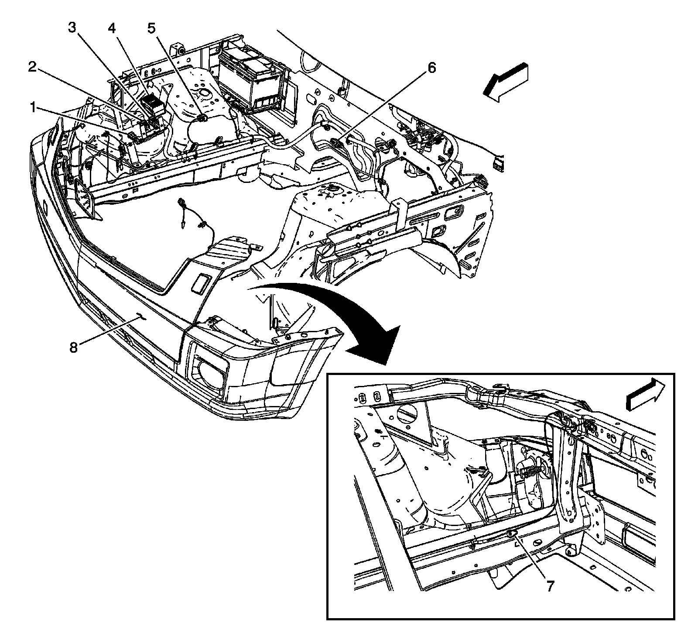

LHD
Harness Routing Views (LHD)
Rear of Engine Compartment (LH2 - Gas, 8 Cylinder, 4.6L, SFI, V8, DOHC, HO)

1 - X104
2 - Fuse Block - Underhood X3
3 - G100
4 - G107
5 - X175
6 - X107
7 - Heated Oxygen Sensor (HO2S) Bank 1 Sensor 1
8 - X102
I/P Harness Routing - Front Engine Compartment

1 - X116
2 - X118
3 - X117
4 - Fuse Block - Underhood X2
5 - X103
6 - X102
7 - G101
8 - Front Fascia